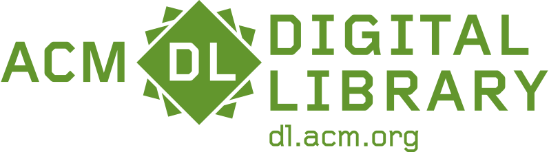

Created by: Karl Toby Rosenberg
Contact: karltobyrosenberg [-at-] nyu [-dot-] edu
LinkedIn
Paper (published in HCI Conference ACM UIST 2024):
Conference Program Page,  Adobe Research Page
Adobe Research Page
Project Code


Supplemental: User Study: System Manual/Instructions for Participants
Poster: